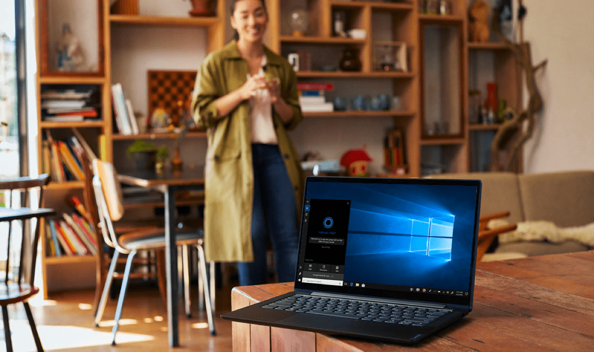
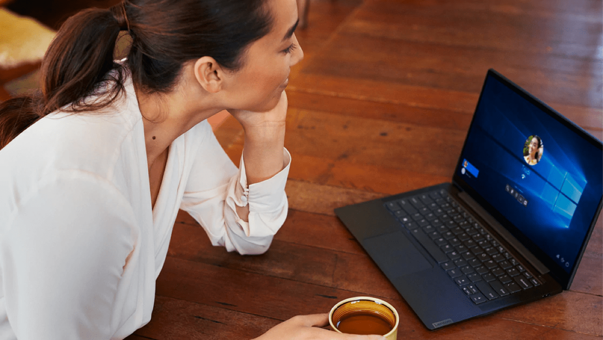
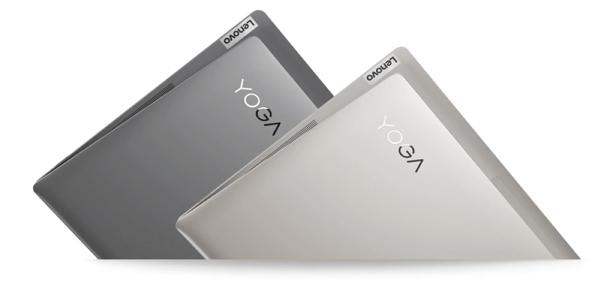
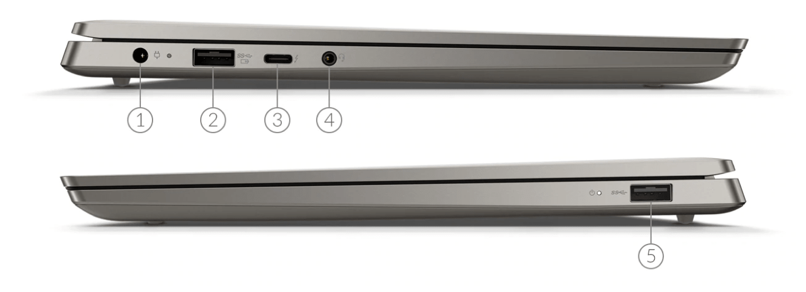

Pomysłowe technologie dla wszystkich
Lenovo poszerza zakres możliwości w nowych laptopach Yoga opracowanych wspólnie z firmą Intel® i wyposażonych w funkcje sztucznej inteligencji. Teraz możesz mówić do urządzenia i nim sterować z drugiego końca pokoju. Oglądać wideo o podwyższonej jakości w programie Windows Media Player. Unikać zmęczenia oczu dzięki wyświetlaczowi, który automatycznie zmniejsza natężenie światła niebieskiego odpowiednio do pory dnia. A to jeszcze nie wszystko
Sztuczna inteligencja i zdrowy rozsądek
Zaawansowany procesor Intel® Core™ 10. generacji do urządzeń mobilnych i utraprzenośny laptop Yoga S740 dostosowują się do Twoich potrzeb i stylu użytkowania. Razem tworzą rozwiązanie bardziej intuicyjne i osobiste, którego sztuczna inteligencja dynamicznie reaguje na Twoje działania i optymalizuje żywotność baterii.
Potrzebujesz czegoś? Wystarczy poprosić.
Yoga S740 ma mikrofony dalekiego zasięgu i inteligentne asystentki głosowe Alexę oraz Cortanę. Pomogą Ci złożyć zamówienie, ustawić
przypomnienie czy odtworzyć muzykę — wystarczy poprosić z odległości do 4 metrów. To kolejny przykład przewagi, jaką daje Ci Yoga
S740.
Aby uzyskać więcej informacji o Cortanie, kliknij tutaj , a w celu uzyskania
dodatkowych
informacji o
Alexie,
kliknij tutaj.
Mobilne kino
Wyświetlacz o przekątnej 14 cali w wąskiej jak brzytwa ramce prezentuje imponującą gamę kolorów i szczegółów. Ekran do poziomu 4K VESA400 HDR z jasnością 500 nitów i spektakularną technologią Dolby Vision™ oraz bogaty, wielowarstwowy dźwięk 3D z głośników z Dolby Atmos® oferują niezwykle realistyczną i wciągającą rozrywkę.
Nie ma gniazdka? Nie ma problemu.
Niezależnie od tego, czy pracujesz w terenie, czy też urządzasz sobie serialową noc na sofie, bateria eleganckiego i smukłego Yoga S740 ma w sobie wystarczająco dużo energii — na nawet 15 godzin działania.
Nowy poziom wydajności
Opcjonalna dedykowana karta graficzna NVIDIA® GeForce® MX250 zwiększa dodatkowo możliwości laptopa w zastosowaniach służbowych i rozrywkowych. Korzystaj z nawet 3,5-krotnie większej wydajności w porównaniu ze zintegrowaną kartą graficzną w aplikacjach do edycji zdjęć i wideo, a także z szybszej i płynniejszej gry.
Intuicyjnie i interaktywnie
Kamera na podczerwień ułatwia życie. Wystarczy, że się oddalisz, a oglądany film zostanie automatycznie wstrzymany. Zawartość wyświetlacza laptopa możesz przenieść na dodatkowy monitor ruchem głowy. A to jeszcze nie wszystko. Laptop Yoga S740 reaguje na Twój styl użytkowania, dlatego możesz skupić się na tym, co ważne.
Zna Cię lepiej
Możesz na przykład logować się do niego samym uśmiechem. Dzięki kamerze na podczerwień i funkcji rozpoznawania twarzy Windows Hello możesz zacząć pracę trzy razy szybciej niż wpisując hasło. Jest też świetnie zabezpieczony.
Elegancki styl i mobilność
Yoga S740 ma obudowę z piaskowanego aluminium z wykończeniem wysokiej klasy i łączy w sobie wysoką wydajność z wygodną mobilnością. Ma jedynie 14,9 mm grubości, a waży zaledwie 1,4 kg i jest dostępny w kolorze żelaznoszarym lub z ciepłym, metalicznym mikowym wykończeniem.
Szybki i elastyczny
Yoga S740 ma port Thunderbolt™ 3. Pod względem szybkości przewyższa on port USB 3.0 aż 8 razy, dlatego stanowi najszybszy i najbardziej uniwersalny sposób łączenia z monitorami, stacjami dokującymi i pamięcią masową. Co więcej, służy też jako źródło zasilania. Laptop ma też szybką łączność Wi-Fi 6, dlatego możesz teraz wyświetlać strumieniowe wideo i przeglądać strony internetowe bez porównania płynniej.
Specyfikacja
14” FHD (1920 x 1080) IPS, 400 nitów z Dolby Vision
Wąskie ramki ekranu: lewa/prawa: 3,4 mm, górna 6,7 mm, dolna: 11,8 mm
‡ Spodziewana dostępność w modelu HDR z końcem 2019 r. Pamięć Do 16 GB pamięci LPDDR4X Bateria Do 15 godzin z wyświetlaczem FHD
Do 10 godzin z wyświetlaczem UHD * Na podstawie testu MobileMark 2014. Czas działania baterii znacznie się różni w zależności od ustawień, sposobu wykorzystania i innych czynników. Pamięć masowa Do 1 TB PCIe SSD Grafika Intel® HD Iris
Opcjonalnie: NVIDIA® GeForce® MX250 2GB Zabezpieczenia Kamera na podczerwień do logowania się bez użycia rąk Dźwięk Dolby Atmos® Speaker System
Mikrofony dalekiego zasięgu Asystenci cyfrowi Cortana
Alexa†
† Spodziewana dostępność z końcem 2019 r. Tylko na wybranych rynkach. Kamera 720p Wymiary (szer. x wys. x głęb.) 322,3 mm x 212 x 14,9 mm krawędź przednia i 18,1 mm krawędź tylna Waga Od 1,4 kg Opcje kolorystyczne Iron Grey (żelaznoszary)
Mika Łączność Intel® Wireless-AC 2x2
Wi-Fi 6 (dostępność z końcem 2019 r.) Klawiatura Podświetlana klawiatura Gniazda USB-C (USB + DisplayPort + zasilanie + Thunderbolt™ 3)
2 x USB 3.1 (2. generacji, jedno zawsze aktywne)
Gniazdo słuchawek/mikrofonu
Zasilanie
Specyfikacja
- Zasilanie
- USB 3.1 (Gen 2, zawsze aktywny)
- USB-C (USB + DisplayPort + zasilanie + Thunderbolt™ 3)
- Gniazdo słuchawek/mikrofonu
- USB 3.1 (Gen 2)